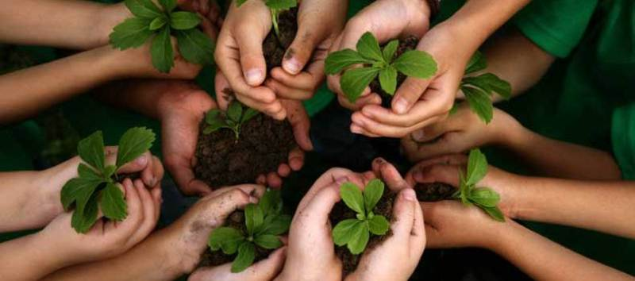
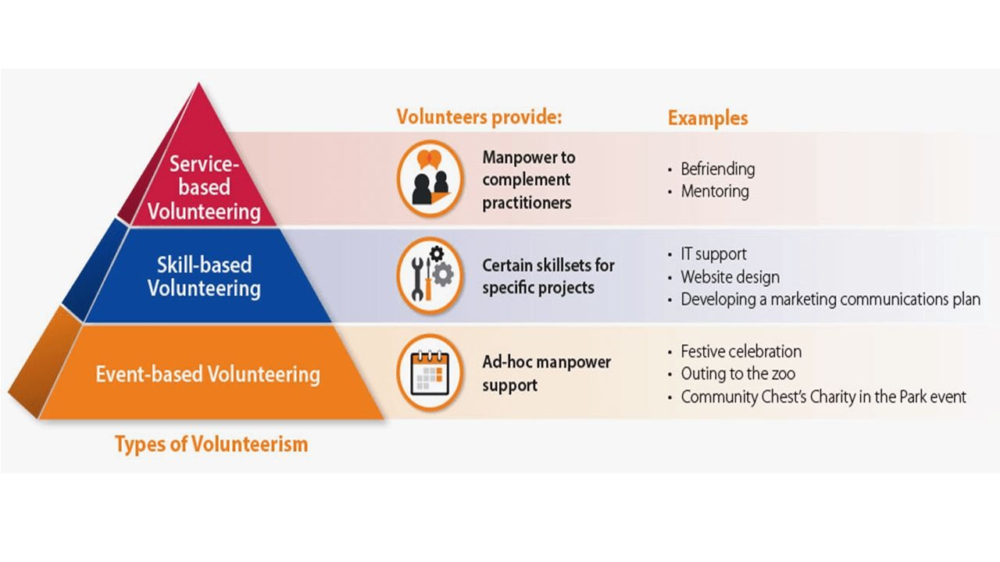

- Volunteering connects you to others.
- Volunteering is good for your mind and body.
- Volunteering can advance your career.
- Volunteering brings fun and fulfillment to your life.
What is Volunteerism?
“Volunteering is giving your time to help someone else or a cause you care about, simply because
you
want to and without expecting payment”.

According to United Nation Pakistan,
“Volunteerism
is a powerful means of engaging people in tackling development challenges, and it can transform
the
pace
and nature of development. Volunteerism benefits both society at large and the individual volunteer by
strengthening trust, solidarity and
reciprocity among citizens, and by purposefully creating
opportunities for participation”.
Types of Volunteerism
- Service Based:
- Skills-Based:
- Events-Based
Service-based volunteering provides manpower resources to social service organisations. Some examples include mentoring for youths-at-risk, and caregiver support.
Skills-based volunteering is where professionals use their talents, experiences and resources to
strengthen the capabilities of social services such as communications,
website design and
fundraising.
Volunteering at one-time activities such as fundraising events, or conferences are examples of events-based volunteering.

Key Areas of Volunteerism
- Community Projects
- Volunteering in Hospitals
- Green Volunteering
- Human Rights
- Child Protection
- Environment
- Disaster Preparedness
- Information Technology
Advantages of Volunteerism
As we lose ourselves in the service of
others, we discover our own lives and
our own
happiness.

"Dieter F. Uchtdorf"